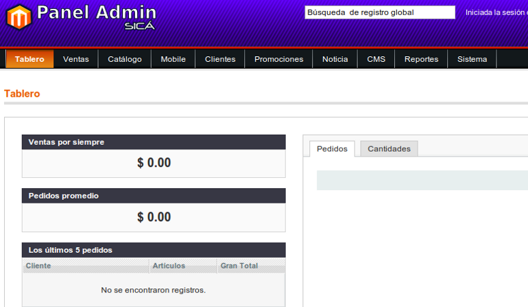

Panel Administrativo Magento 1.6 por SICÁ
Imagenes del tema
Area de login
Principal
Pie de página
Este panel administrativo es para el uso de algunas aplicaciones con magento, para esto hemos tomado el panel por defecto y hemos realizado modificaciones muy sutiles.
Instrucciones De Como utilizar.
1.- Descarga el paquete.
Usted puede descargar el panel desde los siguientes enlases:
Download as .tar.gz Download as .zip
2.- Agregando los archivos a nuestro Magento.
Combinar los archivos del la carpeta Magento-1.6 manteniendo la misma estructura de nuestro magento, renombrar el skin que estaremos usando p.e. si vamos a trabajar con una tienda de ropa podemos usar algo como mi_tienda_ropa: por lo cual hacemos algo como:
mov skin/adminhtml/default/sica_admin skin/adminhtml/default/sica_admin/mi_tienda_ropa
3.- Configurando mi Magento para usar el tema.
Para esto tienes que ir al Admin, System (sistema) -> Configuration (configuración) -> Design (Diseño) -> Temas, ahí seleccionamos el nombre de nuestro tema p.e. mi_tienda_ropa.
4.- Desactiva el Cache.
Para para desabilitar el cache Admin, System (sistema) -> Cache Management (Gestión de Cache) desactivamos Salida de Bloques HTML y listo.